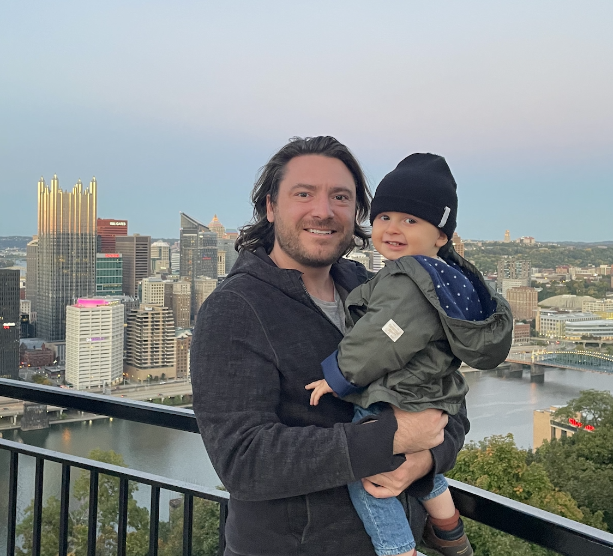
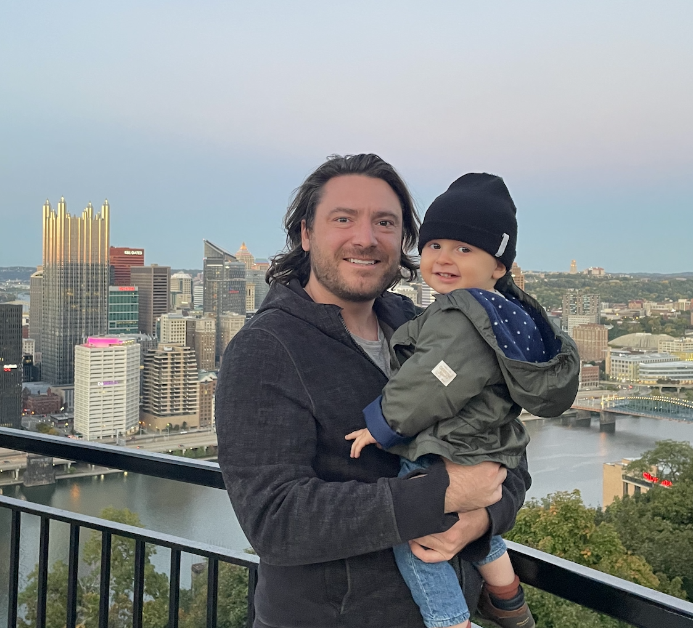

Personal Background
Pittsburgh (Native, NYC, then CMU's HCI Masters)
Relocated to Germany during Covid, officially moved in 2021
Born in Pittsburgh, Pennsylvania, generally on the east side of the United States. Still love camping and getting out in the vastness of nature. Interestingly enough, lived in Russia about a year when I was in middle school, high school, and went to college in New York City. Came back to Pittsburgh and did grad school at Carnegie Mellon.
After about 7 really amazing years at Eaton, I actually moved to Germany through the COVID years and turned it into a permanent home with my family including 2 awesome kids. We live in the Cologne-Düsseldorf region, so although I don't have the same closeness to nature, we do have great local culture and our family enjoys traveling all over the area.
Currently managing a team in Portugal among other places, working with a global team, and I'm currently working with Hexagon building their platform for manufacturing digital thread.
Personal Moments
 
